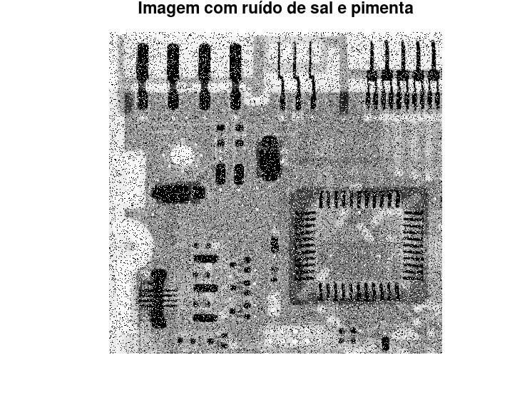

Estudante: André Alfonso Peixoto
GONZALEZ, R; WOODS, R; EDDINS, S. Digital Image Processing Using MATLAB 2. 2. ed. Gatesmark Publishing, 2009. Mathworks Stack Exchange Wikipedia
%{
Ler a imagem I = im2double(imread('Fig0507(a)(ckt-board-orig).tif'))
* 1. Aplicar o redimensionamento para K=1 ate 4
-- reescalar com escala K
imresize(I , k)
-- aplicar ruido imnoise
( f , 'salt & pepper' , 0.5 )
-- aplicar o filtro mediana utilizando matriz de [3 3], [5 5], [7 7] e [9 9] e outros
medfilt2 ( g , matriz , 'symmetric' ) ;
-- aplicar o filtro mediana adaptativa (tamanho 9 ou outro)
adpmedian ( g , 9)
* Visualizar e comentar o resultado da restauração do filtro mediana e filtro mediana adaptativa
%}
pkg load signal; pkg load symbolic; pkg load image;
img = im2double(imread("Fig0507(a)(ckt-board-orig).tif")); imshow(img); title("Figura original");
for i = 1:4 redimension = imresize(img,i); titleName = sprintf("Escala k=%d",i); figure; imshow(redimension); title(titleName); end
imgNoisy = imnoise(img,'salt & pepper',0.2); figure; imshow(imgNoisy); title("Imagem com ruído de sal e pimenta");
maximum = 9; quantity = 5; position = 1; subplot(1,quantity,position); imshow(imgNoisy); title("Imagem ruidosa"); for i = 3:2:maximum position = position + 1; img = mat2gray(medfilt2(imgNoisy,[i,i], "symmetric")); titulo = sprintf("Filtro de ordem %d",i); subplot(1, quantity, position); imshow(img); title(titleName); end
img = mat2gray(imgNoisy); img = medfilt2(imgNoisy); %adpmedian não executado com Octave subplot(1,2,1); imshow(imgNoisy); title("Imagem ruidosa"); subplot(1,2,2); imshow(img); title("Imagem filtrada");